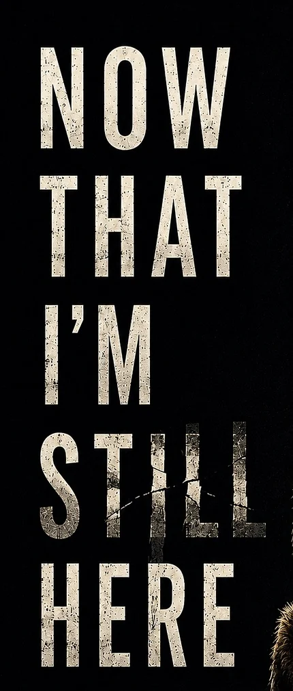

- Editorial and publishing strategy
- Professional cover and interior
- Paperback and ebook files
- ISBN, metadata, KDP, and IngramSpark setup
- Author website and sales pathways
- Launch and reader-platform infrastructure
Founding case study
The press began with a book that refused to be simple.
Now That I’m Still Here became the proof of concept for an integrated publishing system built around one manuscript, one author, and a great many production decisions.
 FOUNDING TITLE / 2025
FOUNDING TITLE / 2025The starting problem
A meaningful manuscript needed more than publication.
It needed editorial coherence, a professional book object, metadata, distribution decisions, retailer and direct-sales pathways, a credible author website, and a long-term reader platform.
The founder’s own memoir became the working laboratory that created Sentinel House Press. It is presented as lived publishing experience, not disguised as a fictional outside client engagement.
- Book
- Now That I’m Still Here
- Length
- 204 pages
- Formats
- Paperback and ebook
- Distribution
- KDP and IngramSpark
- Production
- Cover, interior, files, proofs, metadata
- Platform
- Author website, retailer and direct-sale pathways
The archive
The finished cover comes first.
The complete 3:5 cover is shown intact before the archive moves into typography, narrative image, light, threshold, and imprint color.

Evidence without inflation
What was produced. What happened next.
Outputs are the work the press can directly document. Outcomes are results that followed publication and should not be attributed carelessly.
- A finished book available through direct and retail pathways
- A functioning author platform connected to essays, email, and analytics
- Operational lessons converted into reusable publishing systems
- Sales, reviews, and audience growth reported only when verified and appropriately attributed
What this project proves
Evidence, with its shoes tied.
The founding title demonstrates integrated execution. It does not manufacture a vast client roster or promise miraculous sales.
One complete memoir moved from manuscript through publication and platform.
KDP and IngramSpark configured as distinct channels with different jobs.
Print and ebook production coordinated with metadata and retailer presentation.
A digital home connected the book, direct sales, retailers, essays, email, and analytics.
What it does not prove:Guaranteed sales, guaranteed reviews, guaranteed bookstore placement, or a publishing empire hidden behind the curtain.
Work completed
One book. An entire publishing ecosystem.
The work moved through connected systems rather than isolated deliverables.
01EDITORIAL
Positioning, structure, voice, reader journey, front and back matter.
02PRODUCTION
Cover, interior, print files, ebook files, proofs, specifications.
03PUBLISHING
ISBNs, metadata, KDP, IngramSpark, pricing, retailer copy.
04PLATFORM
Author website, direct sales, retailer links, essays, email, analytics.
What the company learned
The first project created the operating standard.
Experience is useful only when it becomes a better system for the next author.
Production problems compound.
Cover dimensions, metadata, distribution settings, retailer copy, and website links are connected decisions.
Ownership must be explicit.
Accounts, files, rights, credentials, royalties, and final decisions require documentation.
The website is part of publishing.
A book needs a credible digital home, sales path, and relationship to the author’s wider work.
A launch is not a business model.
Long-term reader development, email, direct sales, content, and measurement continue after launch week.
Bring us the manuscript, not the mythology.
We will assess the work, the goals, the risks, and the most sensible publishing path.